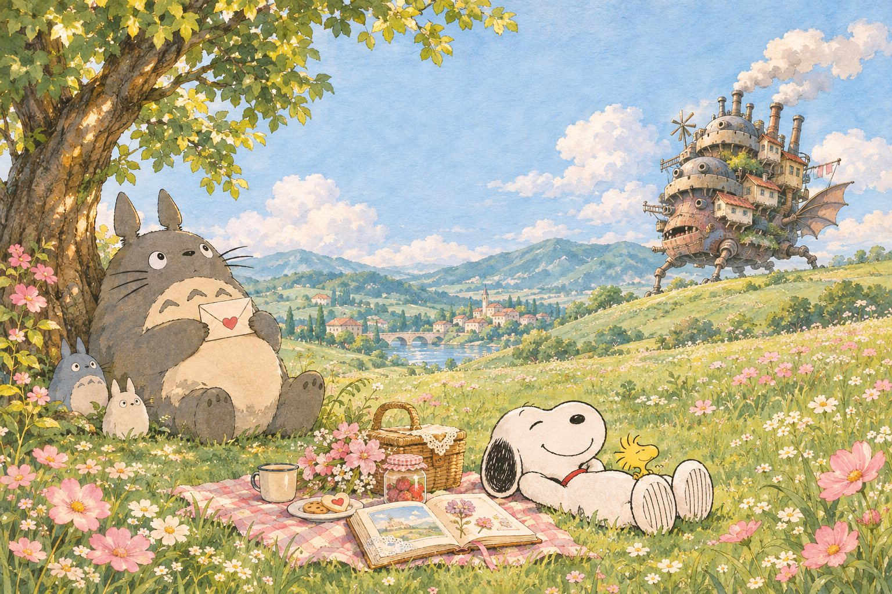
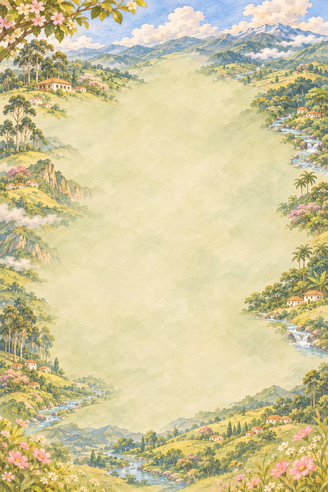

Feliz cumpleaños,
Valentina.
Hice este pequeño mundo para celebrar tu vida.
Y para recordarte lo profundamente amada que eres.

Hoy cumples un año más, y yo celebro la suerte de conocerte.
Estos recuerdos son algunas de las razones por las que me hace tan feliz que existas.
Nuestros pedacitos.
Desliza nuestros recuerdos. Toca una foto o dale play a un video.
Iría a cualquier lugar.
Si ahí estás tú.
Soy de Mocoa. He viajado hasta Popayán y Medellín para verte. Y volvería a hacer el camino, porque al final estás tú.
la mejor parte del viaje
siempre es encontrarte.
Mocoa, de donde soy.
Toca un destino y acompáñame en el camino.

Mi regalo también
está en estas palabras.
Una carta.
Todo lo que siento.
Ponte cómoda. Esta es para leerla despacito.
Para ti, Valentina.Abrir mi carta ↗Doblar la carta ↙
Y unas cartitas para otros días.
Pequeñas cosas que también quiero recordarte.
Un poquito de nosotros.
Pide un deseo,
cumpleañera.
Guárdalo para ti. Después, toca la vela.
Feliz cumpleaños, Valentina.
Que este nuevo año de tu vida te traiga motivos para reír, sueños por cumplir y mucho amor del bonito.
Gracias por ser tú. Por enseñarme a amar y a sentirme amado.
Te amo con todo mi corazón.